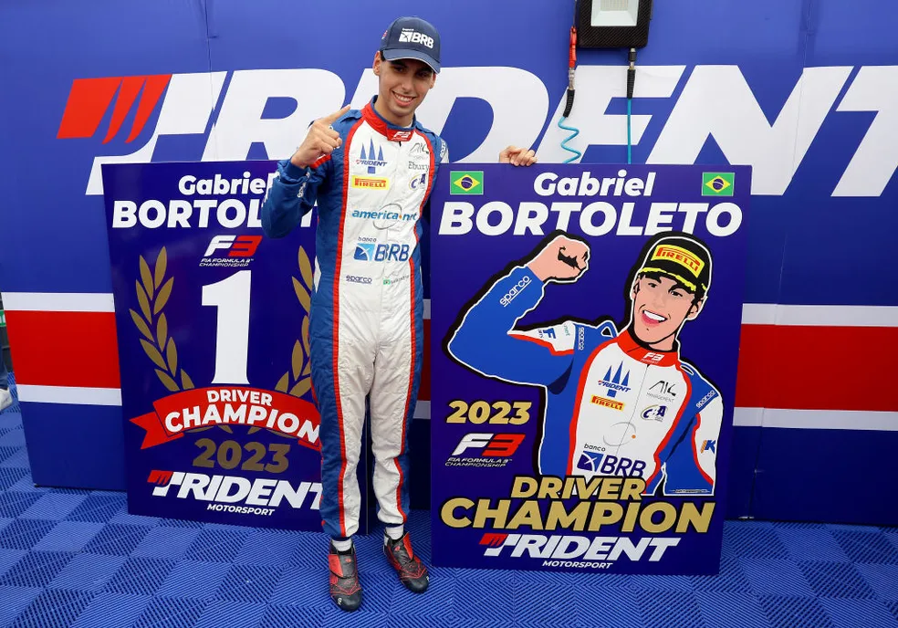

🏎️ Gabriel Bortoleto na Fórmula 3
A temporada de 2023 marcou um ponto de virada decisivo na carreira de Gabriel Bortoleto. Após conquistar resultados sólidos nas categorias de base, o piloto brasileiro estreou na FIA Fórmula 3, uma das divisões mais importantes do automobilismo internacional e trampolim direto para a Fórmula 2 e Fórmula 1. Gabriel foi anunciado como piloto da Trident Motorsport, equipe italiana de tradição consolidada na categoria. Desde os testes de pré-temporada, o brasileiro mostrou consistência, adaptação rápida ao carro e maturidade digna de pilotos experientes — qualidades que o levaram a ser um dos principais nomes da temporada já nas primeiras etapas.
🏁 Estreia vitoriosa e liderança consistente
Logo na abertura do campeonato, no circuito de Sakhir, no Bahrein, Bortoleto surpreendeu ao conquistar a pole position e vencer a corrida principal (feature race) com autoridade. A vitória em sua estreia deu início a uma sequência de desempenhos impressionantes, marcados por:
- Alta consistência nos pontos
- Liderança do campeonato desde a primeira etapa
- Estratégia inteligente em corridas sob chuva e em pistas técnicas como Mônaco e Silverstone
Diferente de outros pilotos que alternavam entre bons e maus resultados, Gabriel foi extremamente regular. Em uma categoria notoriamente equilibrada, essa constância foi decisiva.
🏆 Campeão da Fórmula 3 – Temporada 2023
Com uma performance sólida ao longo de todas as etapas, Bortoleto conquistou o título com uma rodada de antecedência, algo raro na história da categoria. Ele se tornou:
- O primeiro brasileiro a vencer o campeonato da FIA F3 desde sua atual configuração (iniciada em 2019)
- O segundo brasileiro da história a conquistar a F3 (seguindo os passos de Nelson Piquet Jr. em outra versão da categoria)
Ao final da temporada, Gabriel somou:
- 1 vitória, 6 pódios, 2 poles e 164 pontos
- Título com uma vantagem confortável sobre seus concorrentes
🌍 Reconhecimento internacional e salto na carreira
A consagração como campeão da Fórmula 3 atraiu o olhar de equipes da Fórmula 2 e Fórmula 1. Ainda em 2023, Gabriel foi anunciado como piloto afiliado à McLaren F1 Team, passando a integrar o programa de desenvolvimento da equipe britânica.
Além disso, ele confirmou sua promoção à Fórmula 2 em 2024, pela equipe Invicta Virtuosi, consolidando sua ascensão no esporte.
🔧 Habilidades e características marcantes
Durante sua campanha histórica, Bortoleto foi amplamente elogiado por:
- Sua capacidade de leitura de corrida
- Habilidade de preservar pneus e atacar nas voltas finais
- Mentalidade calma e estratégica mesmo sob pressão
- Evolução notável no trabalho técnico com engenheiros
🇧🇷 Orgulho nacional
Com sua vitória na Fórmula 3, Gabriel reacendeu a esperança dos fãs brasileiros em ter um novo representante na Fórmula 1. Sua trajetória se tornou inspiração para jovens kartistas e reafirmou o Brasil como celeiro de talentos no automobilismo mundial.